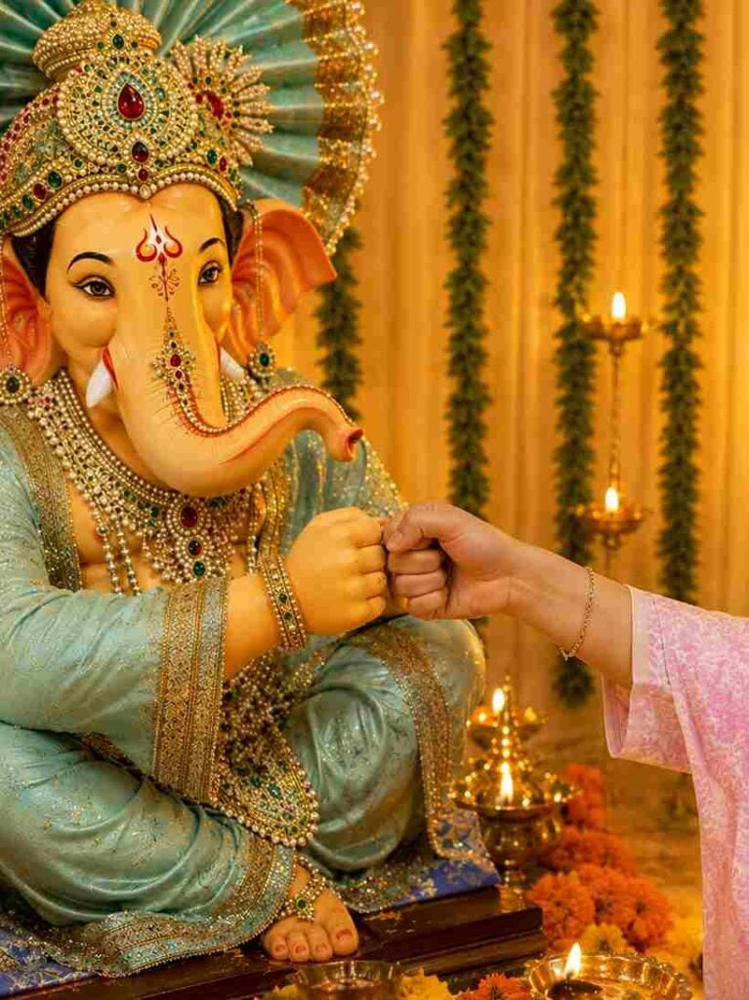
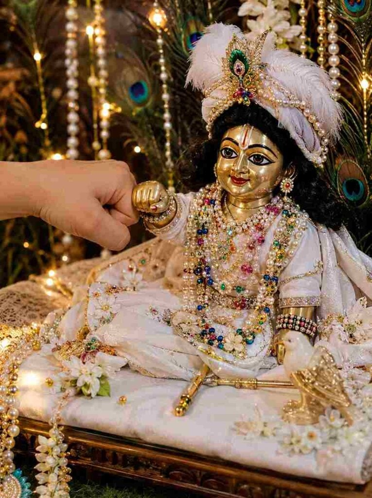

Creating a beautiful Ganesh Ji and Laddu Gopal fist bump photo with AI is a creative way to make a unique devotional image. By using a suitable reference image and a detailed prompt, you can create a realistic scene showing both idols facing each other with their fists touching naturally. The main focus of this editing idea is the clear fist-to-fist contact between Ganesh Ji and Laddu Gopal, while keeping their traditional appearance, clothing, jewelry, flowers, and decorative details. In this article, you will find the complete prompt and simple steps to create this devotional photo.
Ganesh Ji & Laddu Gopal Fist Bump Photo Prompt
Use the uploaded reference image as the primary visual reference and paste the prompt below with your image.
Want more awesome prompts?
Join our community and get the latest viral prompts daily.
Follow on Instagram

How to Create Ganesh Ji & Laddu Gopal Fist Bump Photo
Creating this devotional photo with an AI image editor is very easy. Just follow the simple steps below:
- Open your preferred AI image-editing tool.
- Upload the clear reference image.
- Copy the complete fist bump prompt.
- Paste the prompt with your uploaded image.
- Generate the devotional photo.
- Check both idols and their hand positions.
- Make sure the fists clearly touch each other.
- Ask the AI to correct any unnatural details.
- Save your final image.
Why the Reference Image Is Important
The uploaded reference image helps guide the overall appearance of the generated photo. Use a clear image with the idols, decorations, clothing, and composition visible. A good reference can help the AI understand the placement and visual style you want to maintain. Since the fist bump is the main feature of this concept, make sure the reference and prompt provide enough space around the hands. If the first result changes the composition too much, ask the AI to preserve the original framing, idol placement, colors, decorations, and overall devotional atmosphere.
How to Get Clear Fist-to-Fist Contact
The most important part of this prompt is the hand interaction. Both idols should have one clearly closed fist, with the two fists facing each other and touching directly at the knuckles. There should be no visible gap, overlapping hands, or unclear finger positions. If the AI generates an incorrect hand position, ask it to focus only on correcting the fist bump while keeping the rest of the image unchanged. Repeating the instruction about separate fists and direct knuckle-to-knuckle contact can also help produce a clearer result.
Add Realistic Devotional Details
To make the final image look more beautiful, include realistic details such as traditional clothing, pearl jewelry, colorful necklaces, golden ornaments, flowers, garlands, and peacock feathers. Warm decorative lights can create a soft and pleasant atmosphere, while realistic shadows and fabric textures can make the idols appear more detailed. Keep the background balanced so that the fist bump and both idols remain the main focus. You can also experiment with different lighting and decorative arrangements while keeping the main pose and fist-to-fist interaction unchanged.
Tips for Better AI Results
For the best results, use a high-quality reference image and keep the main prompt detailed but clear. Pay special attention to the hands, because AI-generated images can sometimes create unusual hand shapes or unclear contact. After generating the first version, carefully check the fists, facial details, jewelry, clothing, and overall proportions. If something looks incorrect, ask the AI to correct only that particular area. Creating a few variations can also help you find the most natural-looking result. Always keep the devotional appearance and original visual concept consistent throughout the editing process.
Final Words
The Ganesh Ji and Laddu Gopal Fist Bump Photo Prompt can help you create a unique and heartwarming devotional image with AI. The key to this concept is maintaining the recognizable appearance of both idols while creating clear and intentional fist-to-fist contact. Use the reference image, follow the detailed prompt, and carefully check the hands after generation. If needed, make small corrections until the fist bump looks natural and clearly visible. I hope this prompt helps you create a beautiful devotional photo, and if you have any problems, please let me know in the comment box or on our Instagram page.